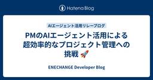
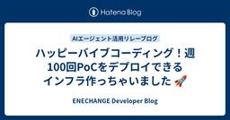
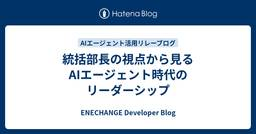
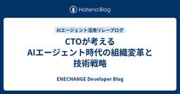
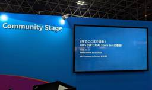

ENECHANGE Developer Blog
https://tech.enechange.co.jp/
ENECHANGE開発者ブログ
フィード

PMのAIエージェント活用による超効率的なプロジェクト管理への挑戦 🚀
ENECHANGE Developer Blog
こんにちは、ENECHANGE Project Deliveryチームの本庄です。 昨日の石橋さんの記事で紹介された「週100回PoCデプロイ」のインフラ構築、本当にすごいですね！デザイナーがAIと対話するだけでプロダクトを作れる環境を整備されたとのこと。 私もProject DeliveryチームのPM（PjM）として、AIエージェントを活用したプロジェクト管理の効率化に挑戦しています。まだ少しだけしか活用できていませんが、その中で感じた驚きと可能性について正直にお話ししたいと思います。
2日前

ハッピーバイブコーディング！週100回PoCをデプロイできるインフラ作っちゃいました 🚀
ENECHANGE Developer Blog
こんにちは、ENECHANGEの石橋です。 昨日の柏木統括部長の記事で語られた「AIエージェントによる組織変革」。 まさにその具体例として、デザイナー5人が週100回※だってPoCをデプロイできるインフラを作っちゃいました！🎉 ※週100回は「それくらいのペースでデプロイしてやるぞ！」という私たちの気合いを表しています。 🚀 ENECHANGE 2.0 への挑戦 このインフラは単なる技術プロジェクトではありません。 ENECHANGE 2.0 の実現に向けた意欲的な一歩です。
3日前

統括部長の視点から見るAIエージェント時代のリーダーシップ 1
1
ENECHANGE Developer Blog
はじめに こんにちは！プロダクト開発統括部長の柏木です。 今回、AIエージェント活用リレーブログの2番目の執筆者として参加させていただくことになりました。 正直に言うと、最初は「また新しい技術トレンドか...」と思ったのですが(笑)、実際にAIエージェントを試してみて、これは本当に革新的な変化だなと実感しています。 統括部長という立場から見て、AIエージェントがもたらす組織変革の可能性にワクワクしているので、今日は私の率直な体験と今後の期待、そしてAIエージェント時代のリーダーシップについて書きたいと思います。
3日前

CTOが考えるAIエージェント時代の組織変革と技術戦略
ENECHANGE Developer Blog
はじめに はじめまして！4月からENECHANGEのCTOを務めさせて頂いています、亀田と申します。今回は弊社で進めていく、AIエージェントが当たり前になる時代に向けた組織変革と技術戦略について書かせていただきます。 「産業革命以上の大きな波が到来している」 この言葉を聞いた時、正直なところ「また大げさな表現だな」と思いました。でも、実際にCursorやClaude、DevinなどのAIツールを触ってみて、その認識を完全に覆されました。 ENECHANGEのCTOとして、技術戦略の責任者として、この変化の波に乗り遅れるわけにはいかない。むしろ、先頭に立って組織全体をAIネイティブな状態に変革し…
5日前

AWS Summit Japan 2025で登壇しました＆反省点
ENECHANGE Developer Blog
VPoTの岩本 (iwamot) です。 AWS Summit Japan 2025にて、「2年でここまで成長！AWSで育てたAI Slack botの軌跡」というタイトルで登壇の機会をいただきました。 貴重な経験でしたが、終わってみれば課題もいろいろと見えてきました。「もし次回があればこうする」という思いを込めて、記憶が新しいうちにまとめておきます。
7日前

DevinのPRを誰が作ったか分からない問題を、GitHub Actionsで解決してみた
ENECHANGE Developer Blog
こんにちは。ENECHANGEの石橋です。 最近、AI開発エージェントのDevinを活用してコード生成を行う機会が増えています。 しかし、Devinが作成したPull Requestは全て devin-ai-integration[bot] アカウントで作成されるため、実際に誰がDevinに指示を出したのかが分からないという課題に直面しました。 特に、Findy Team+のような開発者生産性測定ツールを使用している場合、誰がどれだけDevinを活用しているかを正確に計測できないのは大きな問題です。 本記事では、GitHub Actionsを活用してDevinが作成したPRに依頼者の情報を自動…
13日前
PostgreSQLのRLSをRailsへ導入する際のポイント
ENECHANGE Developer Blog
こんにちは。ENECHANGEの杉浦です。 PostgreSQLのRow Level Securityを利用したマルチテナントアーキテクチャのシステムをRailsで構築する際のポイントを記載します。 構築する際にはまりどころもあるため本記事で導入のハードルが下がれば幸いです。 一番最後にサンプルコードのリンクも記載しています。
15日前
ENECHANGE で磨いたバックエンドスキルと温かいチーム文化
ENECHANGE Developer Blog
こんにちは！2025年4月から、インターン生としてお世話になりました。高岡己太朗です。 約2ヶ月間、 ENECHANGE でフロント・バックの業務に携わらせていただきました。 この記事では、その中で学んだことや魅力についてご紹介させていただきます。 経緯 ENECHANGE が募集していた通年就業型インターンに参加するきっかけとなったのは、 学内の同級生と参加したハッカソンでした。このハッカソンを通し、API や データベースの基礎などのバックエンドを Go で実装し、バックエンドに興味を持ちました。
18日前
JWTを検証してAWS Verified Accessの経路判定をやってみた
ENECHANGE Developer Blog
CTO室のtockeysanです。 弊社のとあるプロダクトではAWS Verified Access(以降Verified Access)を使用してECS環境にアクセスをしています。 ユーザーがVerified Accessの経路でアクセスしたことをECS上で動いているRailsアプリケーション上で判定・検証する要件があったため、その実装を解説していきたいと思います。 構成 アクセス経路の判定 カスタムヘッダー JWTの検証 1. signerの確認 2. シグニチャの検証 3. 有効期限の検証 実装例 まとめ
19日前
RenderProps パターンで UI 依存のないコンポーネントライブラリを作る
ENECHANGE Developer Blog
はじめに 弊社では、自社プロダクトの開発で培ったノウハウを活かし、電力事業者向けに料金シミュレーション機能を提供しています。 ここ最近では、共通のシミュレーション Rails API とクライアントごとにカスタマイズされた React ベースの SPA を組み合わせた構成が主流です。 シミュレーションの基本的なロジックは共通していますが UI に関してはクライアントごとに多様な要望があり、これまでは既存のリポジトリをフォークし UI 部分を個別にカスタマイズするアプローチを取っていました。 しかし、この方法には以下のような問題がありました： 同じようなコードがリポジトリを跨いで量産されてしまう…
22日前
clineが暴走？テストコード生成の課題を救ったのは.clinerulesでした
ENECHANGE Developer Blog
こんにちは。ENECHANGEの川野邉です。 先日、テストコード自動生成を期待してclineを利用しましたが、思わぬ暴走や課題に直面しました。 本記事では、その課題と解決に役立った.clinerulesの活用事例を紹介します。 同じ悩みを持つ開発者の参考になれば幸いです。 docs.cline.bot この記事で書くこと・書かないこと ✅ 書くこと clineにフロントエンドのテストを書かせた際に起きた課題 課題を解決するために導入した.clinerulesと効果 （まとめ）clineにテストを書かせてみての学びやポイント ❌書かないこと clineや.clinerulesの詳しい技術的な内部…
23日前
Slack botからMCPサーバーを呼びたくて選んだ7つのツール
ENECHANGE Developer Blog
VPoTの岩本 (iwamot) です。 このたび、ENECHANGE社内で使っているSlack botからMCPサーバーを呼び出せるようにしました。おもな背景は次の2つです。 MCPの普及により、便利なMCPサーバーが続々と公開されている 社内Slack botに「外部サイトが参照できたら便利」との意見があった 今回の記事では、機能を実現するために選んだ7つのツールをご紹介します。 MCPホストツール Collmbo MCPクライアントツール Strands Agents MCPサーバーツール mcp-proxy Fetch MCP Server AWS Documentation MCP …
24日前
AWSのChatOps、Lambdaなしでも組める、組めるぞ
ENECHANGE Developer Blog
CTO室の岩本 (iwamot) です。 AWSでChatOpsしたく先行事例を調べたら、Lambdaを使う例がヒットしました。 SlackでChatOps！CodeDeployのBlue/Greenデプロイを操作する方法 - SMARTCAMP Engineer Blog (2021-01-07) しかし今なら、Amazon Q Developer in chat applications（旧称：AWS Chatbot）のカスタムアクションでLambdaをなくせそうな気がします。2023年11月に発表された機能です。 実際に試したところ、おおむね実用的な仕組みができました。 そこで今回は、A…
2ヶ月前
AWS GuardDutyで実現するVPC内通信の包括的脅威検知
ENECHANGE Developer Blog
CTO室のldrです🍒 VPC内通信の不正アクセスをリアルタイムで検知する仕組みをご紹介します。
2ヶ月前
VSCODEでのAmazon Q Developerの初期設定
ENECHANGE Developer Blog
cto室のldrです。 Amazon Q Developerがvscodeで使用できるようになっているので初期設定をメモとして残します。
2ヶ月前
ALBを共用するとどれだけ安くなる？！実際にやって分かった開発環境コスト削減事例
ENECHANGE Developer Blog
ENECHANGE所属のエンジニア id:tetsushi_fukabori こと深堀です。 記事を書くのが年単位ぶりなので書き方も忘れていました。そうか文章ってこう書くんだったねって感じです。 年初から取り組んだ内容は久しぶりに技術ブログで共有すると価値がありそうだったので書くことにします。 相変わらず開発環境のコストをどうにか下げられないか、という話題です。 今回は2025年3-4月に実施した開発環境のインフラ構成変更と、それによるコスト削減を紹介します。 タイトルの通りALBをなんやかやしてコストを削減します。 サーバーが必要なWEBサービスを公開するとどうしてもどこかにロードバランサー…
2ヶ月前
AWSMCPServersをAmazonQとClaudeで比較してみた
ENECHANGE Developer Blog
cto室のldrです。 2025年3月31日にリリースされたAWSMCPServersをAmazonQとClaudeで比較した記事となります。 AmazonQ及びClaudeの利用開始方法については触れません。
3ヶ月前
ElastiCache for RedisをValkeyへ移行しました
ENECHANGE Developer Blog
エネルギークラウド事業部でバックエンドエンジニアをしている白坂です。 2024年10月から Amazon ElastiCache for Valkey が利用できるようになったため、私たちのチームでも Redis から Valkey への移行を行いました。 この記事ではその際につまずいたポイントをまとめます。
3ヶ月前
フロントエンドエンジニアだけどインフラ構築をやってみた
ENECHANGE Developer Blog
ENECHANGEの Yuto Ono です。普段はフロントエンド開発をメインでやっていますが、最近、新規プロダクト開発に伴い、 Terraform でのインフラ構築を経験しました。面白い経験ができたと感じたので、その時に感じたことを書いていきたいと思います。 AWSの資格取得で学んだことを実践できた Terraform の基礎が身についた Terraform Modules の偉大さを実感した CTO室の手厚いサポート さいごに AWSの資格取得で学んだことを実践できた 僕は2024年2月に、AWS Solutions Architect - Associate (SAA) という試験を受け…
3ヶ月前
Amazon ECRの拡張スキャンを始める前に知っておきたい設定ポイント2つ
ENECHANGE Developer Blog
CTO室の岩本 (@iwamot) です。 ENECHANGEでは、Amazon ECRの拡張スキャンを全社的に導入しました。OSパッケージの脆弱性のみが対象となる基本スキャンと違い、プログラミング言語パッケージも対象となります。 導入の狙いは、セキュリティの強化と開発者体験の向上です。古いバージョンのOSやプログラミング言語が使われつづけると、安全性だけでなく開発者のモチベーションまで低下してしまいかねません。 ただし実際に導入してみると、始める前に知っておきたかったポイントがありました。 この記事では、これからECRの拡張スキャンを使う方に向けて、とくに押さえておきたい2つの設定を紹介しま…
4ヶ月前
Terraform v1.11.0のS3 Native State Lockingについて
ENECHANGE Developer Blog
こんにちは、cto室のldrです。 Terraform v1.11.0でGAとなった機能の1つであるS3 Native State Lockingついて書きたいと思います。 v1.11.0 S3 native state locking is now generally available. The use_lockfile argument enables users to adopt the S3-native mechanism for state locking. As part of this change, we've deprecated the DynamoDB-related…
4ヶ月前
GitHub CI/CD実践ガイドの著者の記事を写経してグッドプラクティス11を学び、+1してみる
ENECHANGE Developer Blog
こんにちは、CTO室のldrです。 GitHub CI/CD実践ガイドの著者が提唱するグッドプラクティスを実践し、1つ追加してみました。 グッドプラクティス11 タイムアウトを常に指定する デフォルトシェルでBashのパイプエラーを拾う 「actionlint」ですばやく構文エラーをチェックする Concurrencyで古いワークフローを自動キャンセルする 不要なイベントで起動しないようにフィルタリングする 最安値のUbuntuランナーを優先する GITHUB_TOKENのパーミッションはジョブレベルで定義する アクションはコミットハッシュで固定する Bashトレーシングオプションでログを詳細…
4ヶ月前
JAWS DAYS 2025のセッション「開発組織を進化させる！ AWSで実践するチームトポロジー」で登壇しました
ENECHANGE Developer Blog
CTO室の岩本 (@iwamot) です。 2025年3月1日に開催されたJAWS DAYS 2025で「開発組織を進化させる！ AWSで実践するチームトポロジー」と題する発表をしました。 CfPに応募した理由は下記の通りです。 書籍『チームトポロジー』を読み、エンジニアリングでの迷いが減った AWSユーザーとしてENECHANGEで進めてきた取り組みが、チームトポロジーの考え方に（偶然にも）沿っていることに気づいた この経験を整理してシェアすれば、他のAWSユーザーの迷いも減らせるのではないかと考えた 発表後、聴いてくださった方から「チームトポロジー、読んでみます」「ちょうど進めようと思って…
4ヶ月前
Terraform v1.11.0のWrite-Only Attributesについて
ENECHANGE Developer Blog
こんにちは、cto室のldrです。 terraform v1.11.0がリリースされ、注目してた機能が実装されましたのでご紹介したいと思います。 新機能 書き込み専用属性の追加 プロバイダー側でリソースの属性を「書き込み専用」として指定できるようになりました。 terraform testのJUnit XML出力オプションの一般提供 terraform testコマンドに-junit-xmlオプションが利用可能になりました。 S3ネイティブ状態ロックの一般提供 S3を利用した状態ロック機能がuse_lockfile引数を使うことで有効化できるようになり、DynamoDB関連の引数は非推奨となり…
4ヶ月前
PyCon JP 2024参加レポート
ENECHANGE Developer Blog
ENECHANGEの白坂です。 2024年9月27日〜29日に開催されたPyCon JP 2024に参加してきたので、イベントの様子や印象に残ったセッションについてご紹介します。 ゴールドスポンサーになりました！ 印象に残ったセッション 5年分のツケを一気に払った話 Rustを活用したPythonライブラリの開発 WEBアプリケーションにおけるAWS Lambdaを用いた大規模な非同期処理の実践 最後に
5ヶ月前
現場で使えるライブラリアップデートの進め方
ENECHANGE Developer Blog
ENECHANGEの白坂です。普段はバックエンド開発をメインでしています。 今回の記事では、ライブラリアップデートの具体的な実施手順と、継続的にアップデートを実施していくための工夫を紹介します。 ライブラリアップデートはなぜ必要なのか？ ライブラリアップデートが必要な理由 1. 開発が止まるリスクを避けるため 2. 脆弱性に対応するため 3. 迅速に脆弱性に対応できるようにするため 4. ライブラリの新機能を使うため 脆弱性対応が遅れると発生するリスク Equifax社のデータ漏洩（2017年） Log4Shell（2021年） ライブラリアップデートどうやって進める？ 実施手順 1. 全ての…
6ヶ月前
AWSコスト監視システムを作ってみた
ENECHANGE Developer Blog
こんにちは、ENECHANGEの石橋です。 AWSのコストを管理することは、企業にとって非常に重要です。 本ブログでは、AWS Budgets, SNS, Chatbot, Event Bridge, Lambda, Slackを統合したコスト監視システムの開発について解説します。 TerraformやLambdaの実装例も提供しますので、ご参考になれば幸いです。
6ヶ月前
APIクライアントを OpenAPI Generator から Orval に移行してみた
ENECHANGE Developer Blog
ENECHANGEの Yuto Ono です。エンジニアリングマネージャーをしながら、フロントエンドの開発もしています。 最近、新たなプロジェクトが立ち上がり、フロントエンド、バックエンドともにTypeScriptで開発しています。TypeScript好きの僕にはたまらない環境で、楽しく開発しています。 フロントエンドは React + React Router、バックエンドは NestJS + Prisma を採用しており、フロントエンド・バックエンド間の通信には REST API を使用しています。NestJSの機能で OpenAPI 形式のファイルを出力し、ライブラリでフロントエンド側か…
6ヶ月前
あとで困らない！AWSマルチアカウント移行の前に2点のチェック
ENECHANGE Developer Blog
🎅「AWS Community Builders Advent Calendar 2024」12日目の記事です🎄 CTO室の岩本 (iwamot) です。現在CTO室では、AWS Organizationsによるマルチアカウント環境への移行に取り組んでいます。複数事業部の開発環境や本番環境が同じアカウントに混在していて、セキュリティにもコスト管理にも不都合だったためです。 今回初めてAWS Organizationsを使ってみて、困った点が2つありました。 スタンドアロンアカウントだった期間のコストデータにアクセスできなくなった クレジットカード払いから請求書払いに変えるのに時間がかかった こ…
7ヶ月前
CloudNative Days Winter 2024に実行委員として参加しました
ENECHANGE Developer Blog
CTO室の岩本 (iwamot) です。CTO室では、各事業部で開発しているアプリケーションのコンテナ化を横断的に支援しています。開始から1年半で、6割の環境がEC2からFargateに移行されました。今後も10割を目指して進めていきます。 CloudNative Days Winter 2024 (CNDW2024) というイベントはご存じでしょうか。名前のとおり、クラウドネイティブ技術を広める主旨のカンファレンスです。11月28日から2日間、東京・有明の会場とオンラインとのハイブリッドで開催されました。 event.cloudnativedays.jp そのCNDW2024に、ぼくは実行委…
7ヶ月前